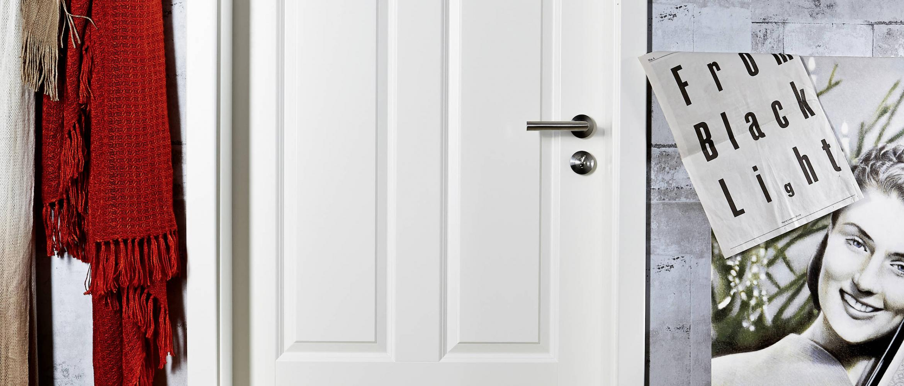

Innentüren

Hereinspaziert in unsere schöne Türenwelt!
Stellen Sie sich vor: eine schlichte Tür in weiß lackiert, kombiniert mit einem stylischen Griff, vielleicht auch reduziert um das Schlüsselloch, eine coole Sache! Oder eine weiße Kassettentür mit einem aufwendigen Türrahmen, dazu ein Türdrücker in einem schicken samtgrau, etwas verspielt in der Ausführung... ein Landhaustraum!
Wir bieten Ihnen schöne Türen in weiß oder in Holz. Die neuen CPL-Oberflächen in verschiedensten Dekoren sind ein Hingucker oder die Tür aus Glas. Alle Türen sind auch als Schiebetüren möglich.
Stellen Sie Ihre Tür nach eigenen Wünschen individuell zusammen. Gerne beraten wir Sie bei der Wahl Ihrer Türen! Besuchen Sie uns in unserer Ausstellung! Wir freuen uns auf Sie!